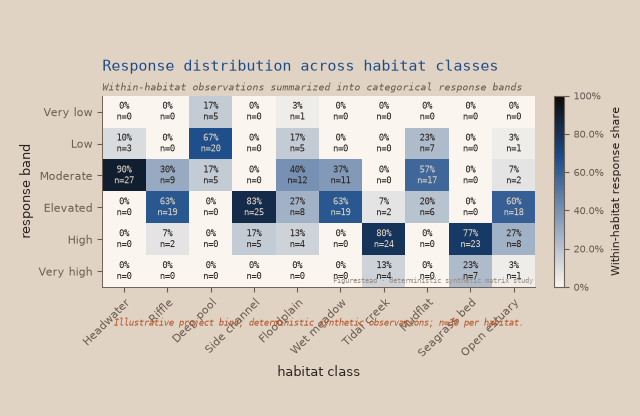
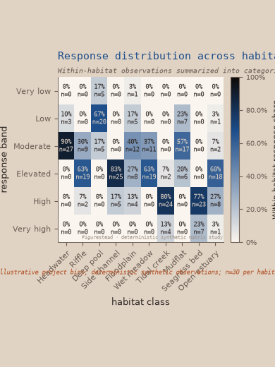

Corpus correction
A matrix with
comparative work to do.
Three hundred deterministic synthetic observations become a 10 × 6 field of within-habitat response shares. This is the existing categorical-matrix renderer—not a new heatmap or browser API.
01
Inspection size
Slipware · 10 habitat columns · 6 project-defined response bands · 60 observed cells, including truthful zeros.

Deep pool concentrates in the Low band; Headwater concentrates in Moderate; Riffle, Side channel, Wet meadow, and Open estuary concentrate in Elevated; Tidal creek and Seagrass bed concentrate in High and Very high. Floodplain and Mudflat spread across more bands than nearby-center comparisons.
Accessible count and share table
Rows are project-defined response bands; columns are habitats. Percentages are within-habitat shares calculated from exactly 30 observations per column.
02
Compact behavior, recorded honestly
The renderer has no documented annotation-density or responsive matrix policy. These are direct renders at the requested boundaries, not redesigned compact variants.


03
Sparse reference / populated field
The public reference establishes cell states; the populated fixture asks whether the renderer’s character survives a real field of comparisons.

04
Montage decision: usable, not strong
The populated matrix broadens the visual-family story at wide inspection size, but it does not clear the authorization threshold for an alternate montage. The accepted eight-panel montage remains unchanged.
Held product question. A compact annotation/label policy could make dense matrices more montage-ready, but defining one would be a renderer feature and design decision outside this pass.